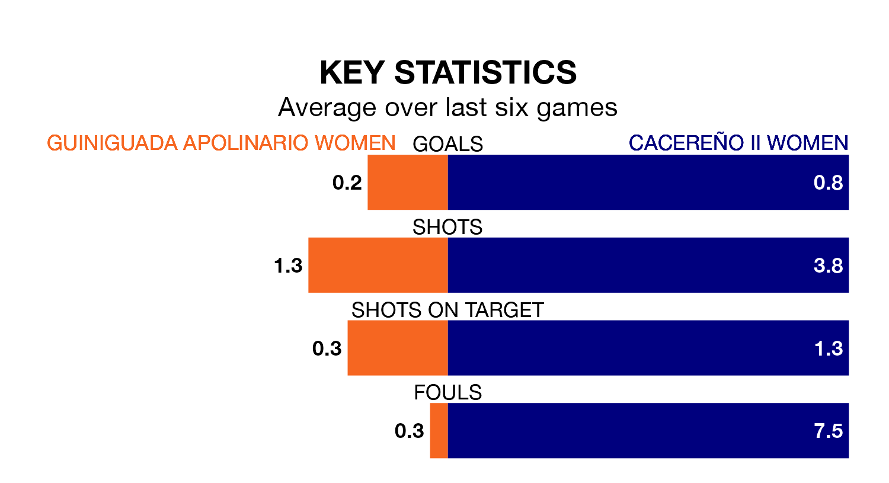

The Segunda Federación Femenina's top two sides face each other in Sunday's early kick-off, when zero-placed Guiniguada Apolinario Women host zero-placed Cacereño II Women.
Guiniguada Apolinario have picked up six wins and four draws from 19 games so far this season, and sit three points below the visitors going into the 11am match.
Cacereño II, meanwhile, have won eight and drawn one of 20, picking up 25 points.
Guiniguada Apolinario are in terrible form in the Segunda Federación Femenina, with no wins and two draws from their last six games.
With a win and a draw over that period, Cacereño II's form is slightly better – they have taken four points from 18, compared to the home side's two.
With 17 goals in 19 games so far this season, Guiniguada Apolinario are the league's-12th-lowest scorers with 0.9 goals per game. And they are conceding more than average, letting in 30 goals at a rate of 1.6 per game.
The visitors are also below average scorers, with 1.1 goals per game, compared to a league average of 1.3. They have conceded 1.6 goals per game.
Guiniguada Apolinario's last match was on Sunday, a 0-0 draw against CD Getafe Women.
Cacereño II drew 1-1 with La Solana Women last time out, on February 10, with on the scoresheet.
Updated: 12:06 (UTC), 15/02/24